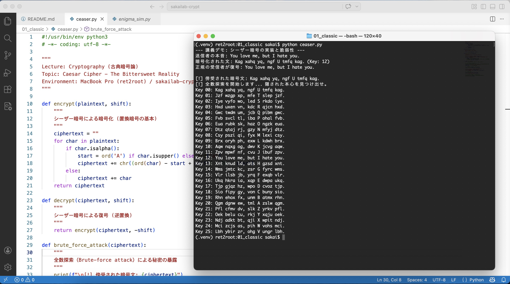
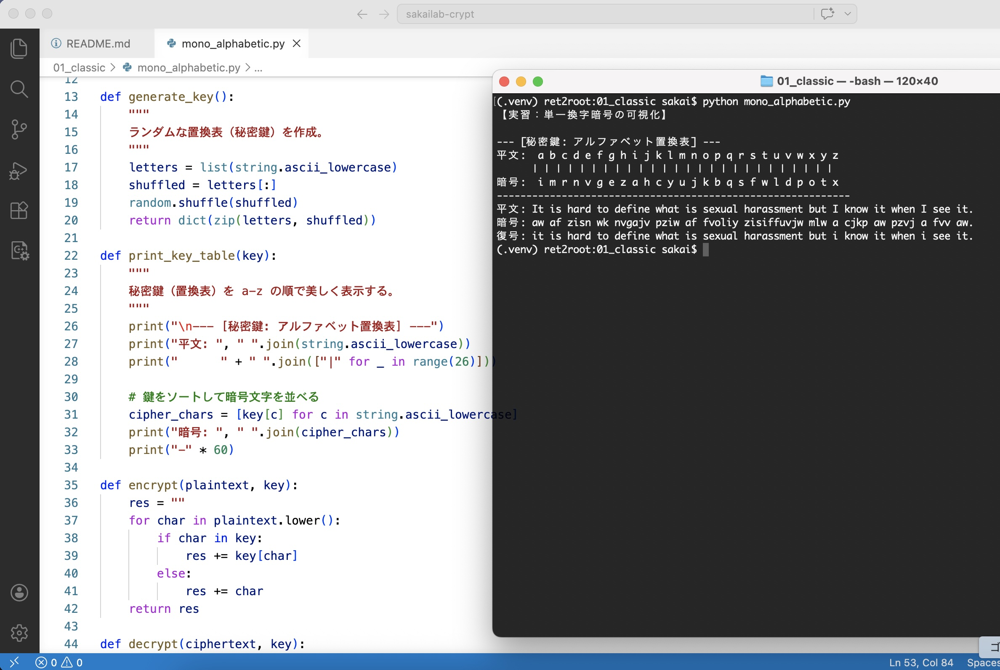
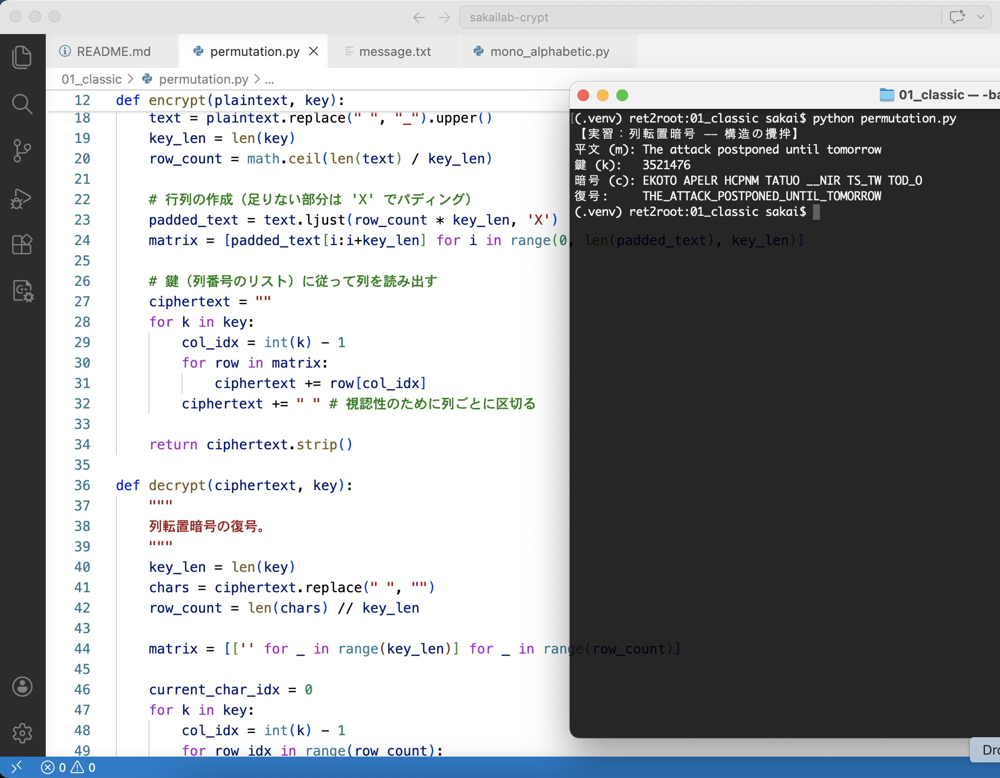
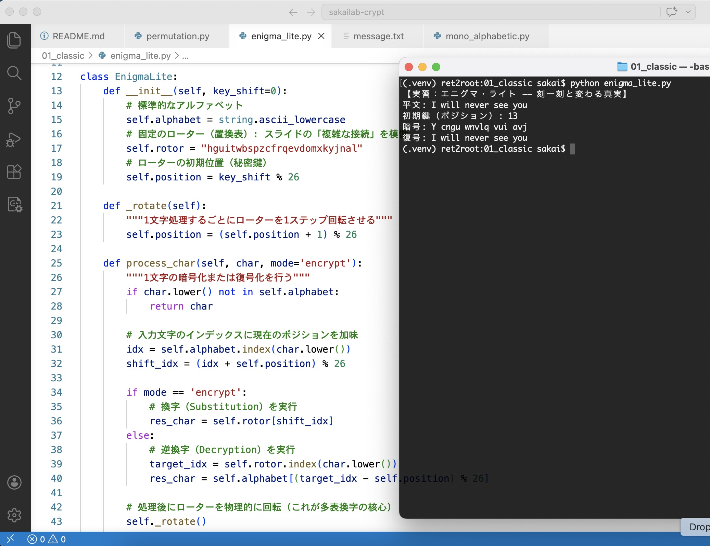

LAB NAVIGATION:
01_CLASSIC
02_PRIVATE_KEY
03_MAC_HASH
04_PUBLIC_KEY
EXERCISE #001 // CAESAR_CIPHER // 2026.04.02
Lab #001: シーザー暗号 ―― 2000年前の「既読スルー」対策
「You love me, but I hate you.」
# 実行コマンド: python3 caesar.py
# 秘密の鍵（Shift）を使って、愛憎渦巻くメッセージを書き換える。
🚨 衝撃の実行結果（解読ログ）
以下の画像は、君たちが実装したコードの「なれの果て」だ。
25通りの可能性を総当たりする全数探索（Brute-force） の前に、隠したはずの本音が、あまりにも無防備に晒されているのがわかるだろう。

【解説】: Key 12 を見てほしい。意味不明な文字列の羅列の中から、突如として残酷な真実が浮上している。
これがシーザー暗号の限界だ。鍵の数が「出席番号の最大値」より少ない暗号なんて、現代のコンピュータの前では、ただの「時間の問題」でしかない。
# 今日の教訓: 暗号と恋の共通点
「暗号を複雑にするより、相手のパスワードを誕生日から推測する方が早い。」
……なんていうソーシャルエンジニアリングに走ってはいけない。
我々が学ぶのは、そんな泥臭い駆け引きではなく、「いかにして数理的に、絶対に破られない壁を築くか」 だ。
"Go West!" ―― 脆弱なアルゴリズムを理解し、次なる「現代暗号」の地平へ。
LAB #002 // MONOALPHABETIC_CIPHER // 2026.04.02
Lab #02: 単一換字暗号 ―― 「見た瞬間に、それと分かる」
前回のシーザー暗号（25通り）とは打って変わり、今回は $26!$ 通りという天文学的な鍵空間を持つ「単一換字暗号」を実装した。
もはや単純な総当たり（Brute-force）は通用しない。 では、我々はいかにしてこの膨大な可能性の中から「真実」を特定するのか。
# 実行結果：秘密鍵（a-z対応表）がランダムに生成される
# 平文：It is hard to define what is sexual harassment but I know it when I see it.
# 暗号：aw af zisn wk nvgajv pziw af fvoliy...
📸 Evidence: The Stewart Verdict
以下の実行ログ（lab1_mono.jpg）を確認せよ。
正しい鍵を適用した瞬間、意味不明な文字列が「法的にも、感情的にも明白なメッセージ」へと変貌する様子が記録されている。

【解読の瞬間】: "I know it when I see it." （見れば分かる）と述べた。
暗号の復号も同様である。正しい鍵が投入され、平文が浮かび上がったその刹那、我々は厳密な統計的検証を待つまでもなく、それが「正解」であることを確信することになる。
暗号とは、ただ情報を隠すための道具ではない。それは、混沌とした世界の中に「信頼」という名の秩序を、自らの数理で構築する行為である。
"Go West!" ―― 鍵の正当性を証明し、知のフロンティアを突き進め。
EXERCISE #003 // ROW_PERMUTATION // 2026.04.02
Lab #03: 転置式暗号 ―― 文字の順序という名の迷宮
これまでの「換字（置き換え）」とは根本的に異なるアプローチ、「転置（並べ替え）」 を学ぶ。
文字そのものは一切変化していない。 だが、その「居場所」を攪拌することで、メッセージの意味を完全に喪失させる手法だ。
# 実行結果：鍵 3521476 に従って列を読み出す
# 平文 (m): The attack postponed until tomorrow
# 暗号 (c): EHOTO APELR HCPNM TATUO __NIR TS_TW TOD_O
📜 Evidence: Columnar Transposition
以下の実行ログ（lab1_perm.jpg）を確認せよ。
平文を行列（グリッド）に書き込み、指定された鍵（列番号の読み出し順）に従って縦読みを行うことで、暗号文が生成されている。

【構造の攪拌】: _ で可視化された空白がバラバラに配置されている点に注目せよ。
文字の並び順（構造）を物理的に入れ替えるこのプロセスは、現代暗号においても「拡散（Diffusion）」を担う重要な要素として継承されている。
# 今日の教訓: 順序がすべてを決める
「明日のデートは延期（Postponed until tomorrow）」という残酷な通知も、列転置にかければ解読不能な文字列の羅列に見える。
重要なのは、「何を伝えるか」ではなく「どの順番で伝えるか」 だ。
これは暗号論における転置アルゴリズムの真理であり、同時に人間関係における致命的なバグを回避するための鉄則でもある。
真実は常にそこに存在する。だが、その「並び」を一つ変えるだけで、世界は意味を失ったノイズの塊へと変貌する。
"Go West!" ―― 運命の並び替えを完遂し、知のフロンティアを突き進め。
EXERCISE #004 // ROTOR_CIPHER // 2026.04.02
Lab #04: ローター暗号 ―― 昨日の愛は、今日のノイズ
古典暗号において最も複雑かつ芸術的 とされた「ローター暗号（エニグマ）」 のエッセンスを体験する。
これまでの単一換字 との決定的な違いは、「1文字ごとに置換ルールが動的に変化する」 点にある。
# 実行結果：1文字打つごとに内部のローターが1クリック回転する
# 平文 (m): I will never see you
# 初期鍵: 13
# 暗号 (c): b xzsr lqofk lra fbx
⚙️ Evidence: Poly-alphabetic Dynamics
以下の実行ログ（lab1_enigma.jpg）を確認せよ。
平文の will に含まれる二つの l や、see に含まれる二つの e が、それぞれ異なる暗号文字へと変換されている。

【多表換字の威力】:
# 今日の教訓: ステート（状態）を共有せよ
「二度と会わない（I will never see you）」 という決別の言葉も、エニグマを通せば一見無意味な文字列へと変換される。
だが、この暗号が成立するためには、送り手と受け手が「全く同じ初期状態（秘密鍵）」 を共有していなければならない。
皮肉なことに、**完璧に拒絶し合うためにも、二人は密接な同期（Synchronization）を必要とするのだ。**
一貫性のない人間を責めてはいけない。1文字ごとに態度（置換表）を変えることでしか守れない機密があるのだ。
"Go West!" ―― 運命の歯車を同期させ、予測不可能な未来をビルドせよ。